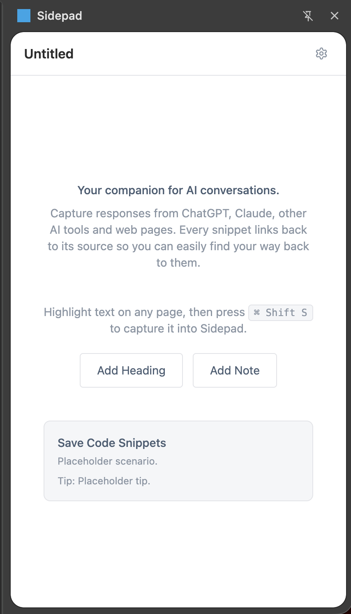

Your companion for AI conversations. Capture responses from ChatGPT, Claude, and other AI tools into structured Markdown documents — saved locally, never uploaded.

A focused set of tools designed for one thing: getting useful text out of the browser and into your files.
Highlight text on any webpage, then press ⌘+Shift+S or right-click to send it to Sidepad. Works everywhere.
Organize captures with headings, notes, and annotations. Every snippet links back to its source.
Your documents are saved as .md files on your computer. No cloud, no account, no sign-up required.
Designed for capturing from ChatGPT, Claude, Gemini, and other AI conversations.
No setup wizards, no onboarding flows. Just a keyboard shortcut and a side panel.
Highlight text and send to Sidepad with a keyboard shortcut or the right-click menu.
Add headings, notes, and annotations to structure your document exactly how you want.
Export as Markdown files to any folder on your computer. Your files, your storage.